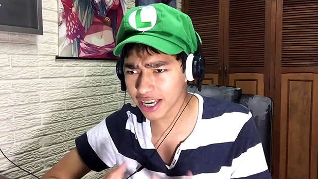
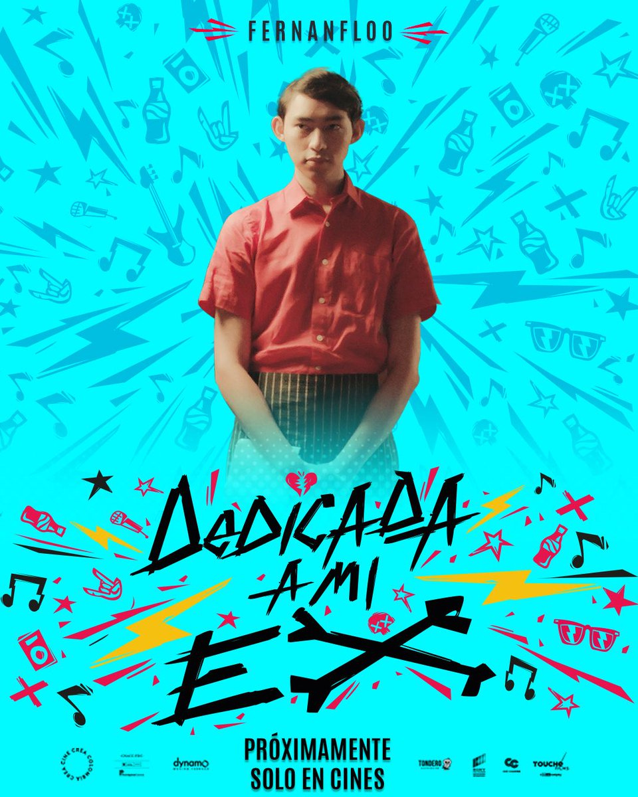

El 2 de mayo de 2011 con 18 años de edad Fernando Flores, creó su canal de YouTube "Fernanfloo" cuyo nombre es una combinación de sus nombres Fernando Flores
Con solo 18 años de edad, Fernanfloo comenzó su carrera en YouTube subiendo tutoriales en video, así como clips cortos de escenas de acción con efectos especiales, su primer video fue "Nightmare – Short Action Scene"
Primer video de FernanflooEn 2017, Fernanfloo participó en la película ecuatoriana "Dedicada a mi Ex", jugando brevemente como camarero. Esta película se estrenó el 8 de noviembre de 2019 en Ecuador y más tarde estuvo disponible en Netflix. En agosto de 2017, anunció la publicación de su primer libro, una novela gráfica titulada Curly está en peligro.
Después de un paréntesis de cuatro meses, subió un video titulado "Se Acabó" (" SE ACABO :'V"), en el que declaró que: "Las cosas realmente van a cambiar. No verás muchos videos como ha habido durante estos siete años que me han acompañado a lo largo de este viaje".[16] Fernanfloo optó por crear un Twitch juegos de canal a transmisión, principalmente Fortnite. En mayo del mismo año, creó otro canal de YouTube llamado "Fernan", que contiene clips de sus transmisiones de Twitch.
SE ACABO :'V En enero de 2019, anunció su colaboración con el desarrollador de juegos Capcom tener a sí mismo en el Resident Evil 2 rehacer, en un video titulado "Soy un Zombie" (Soy un Zombie), Fernan relata que fue a Japón a maquillarse y sus movimientos capturados para ser uno de los muchos zombis en el juego, más tarde en ese mismo video aparece un trailer promocionando la Demo 1-Shot. En 2020, el desarrollador BBTV anunció el lanzamiento de Fiesta Fernanfloo, juego que estaba disponible a finales del mismo año en iOS y Android.